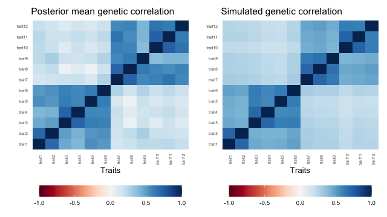

With many traits an unstructured G has many parameters,
and most of them are weakly identified.
genetic_structure = "factor" writes G as a few
sparse latent factors plus trait-specific variances, with
regularized-horseshoe loadings. This vignette simulates twelve traits
from a nine-factor hierarchy (a general size factor, two broad blocks,
four unequal sub-blocks and two nested sub-sub-blocks), fits the factor
model, and compares the posterior G, genetic correlations,
heritabilities, uniqueness and factor magnitudes with the
simulation.
Simulation
set.seed(1)
n_traits <- 12L
n_factors <- 9L
traits <- sprintf("trait%d", seq_len(n_traits))
Lambda <- matrix(0, n_traits, n_factors)
colnames(Lambda) <- c("size", "block1", "block2",
"sub1a", "sub1b", "sub2a", "sub2b",
"subsub1", "subsub2")
Lambda[, 1] <- c(0.62, 0.58, 0.55, 0.50, 0.48, 0.52,
0.60, 0.56, 0.53, 0.49, 0.57, 0.51)
Lambda[1:6, 2] <- c(0.55, 0.50, 0.45, 0.48, 0.52, 0.40)
Lambda[7:12, 3] <- c(0.50, 0.58, 0.45, 0.55, 0.48, 0.52)
Lambda[1:2, 4] <- c(0.55, 0.50) # sub-block 1a: traits 1-2
Lambda[3:6, 5] <- c(0.50, 0.45, 0.55, 0.40) # sub-block 1b: traits 3-6
Lambda[7:9, 6] <- c(0.45, 0.50, 0.40) # sub-block 2a: traits 7-9
Lambda[10:12, 7] <- c(0.55, 0.50, 0.45) # sub-block 2b: traits 10-12
Lambda[3:4, 8] <- c(0.45, 0.40) # nested in sub-block 1b
Lambda[10:11, 9] <- c(0.45, 0.40) # nested in sub-block 2b
Psi <- c(0.35, 0.40, 0.30, 0.45, 0.50, 0.35,
0.40, 0.30, 0.45, 0.35, 0.40, 0.45)
G <- Lambda %*% t(Lambda) + diag(Psi)
E <- diag(c(0.80, 0.90, 0.75, 0.85, 0.95, 0.80,
0.90, 0.75, 0.85, 0.80, 0.90, 0.75))
dimnames(G) <- dimnames(E) <- list(traits, traits)Five generations of 120 individuals, with sex-consistent parents:
n_gen <- 5L; n_breed <- 120L
ped <- data.frame(id = seq_len(n_gen * n_breed),
sire = NA_integer_, dam = NA_integer_,
sex = NA_character_)
ped$sex[seq_len(n_breed)] <- sample(rep(c("M", "F"), each = n_breed / 2))
for (g in 2:n_gen) {
kids <- ((g - 1) * n_breed + 1):(g * n_breed)
pool <- ped[ped$id < min(kids), ]
ped$sire[kids] <- sample(pool$id[pool$sex == "M"], n_breed, TRUE)
ped$dam[kids] <- sample(pool$id[pool$sex == "F"], n_breed, TRUE)
ped$sex[kids] <- sample(c("M", "F"), n_breed, TRUE)
}
A <- makeA(ped)
n <- nrow(A)
X <- cbind(Intercept = 1, sex = rbinom(n, 1, 0.5),
age = round(rnorm(n, 3, 0.5), 2))
B <- rbind(rep(10, n_traits),
seq(-1, 1.5, length.out = n_traits),
seq(-0.4, 0.7, length.out = n_traits))
u <- t(chol(A)) %*% matrix(rnorm(n * n_traits), n) %*% chol(G)
e <- matrix(rnorm(n * n_traits), n) %*% chol(E)
Y <- X %*% B + u + e
colnames(Y) <- traitsFit
The hierarchy is ordered from broad to narrow, so a mild
column_decay favours that order without forcing it. See the
prior section of AGENTS.md (or ?lmm_animal)
for how n_factors, column_decay and the
horseshoe scales interact.
fit <- lmm_animal(
Y, X, A,
genetic_structure = "factor", n_factors = n_factors,
hs_global_scale = 2, hs_slab_scale = 2,
column_decay = 0.9,
iter = 2500, warmup = 1250, chains = 4, cores = 4,
refresh = 0, show_messages = FALSE, seed = 1
)
fit$diagnostic_summary()
#> $num_divergent
#> [1] 0 0 0 0
#>
#> $num_max_treedepth
#> [1] 0 0 0 0
#>
#> $ebfmi
#> [1] 0.8174431 0.8700632 0.8577596 0.8604595Recovery of G
The error is reported relative to the size of G, so it
reads as a share of the target whatever scale the simulation uses. An
absolute error on a covariance matrix means nothing without the
variances it should be compared with.
relative_mse <- function(estimate, truth)
mean((estimate - truth)^2) / mean(truth^2)
G_hat <- draws_mean(fit, "G")
round(sqrt(relative_mse(G_hat, G)), 3)
#> [1] 0.239
round(G_hat[1:6, 1:6], 2)
#> trait1 trait2 trait3 trait4 trait5 trait6
#> trait1 1.55 0.95 0.70 0.60 0.91 0.66
#> trait2 0.95 1.20 0.68 0.55 0.77 0.61
#> trait3 0.70 0.68 1.57 1.08 1.02 0.77
#> trait4 0.60 0.55 1.08 1.44 0.92 0.71
#> trait5 0.91 0.77 1.02 0.92 1.80 0.85
#> trait6 0.66 0.61 0.77 0.71 0.85 1.08
round(G[1:6, 1:6], 2)
#> trait1 trait2 trait3 trait4 trait5 trait6
#> trait1 1.34 0.91 0.59 0.57 0.58 0.54
#> trait2 0.91 1.24 0.54 0.53 0.54 0.50
#> trait3 0.59 0.54 1.26 0.90 0.77 0.67
#> trait4 0.57 0.53 0.90 1.29 0.74 0.63
#> trait5 0.58 0.54 0.77 0.74 1.30 0.68
#> trait6 0.54 0.50 0.67 0.63 0.68 0.94The genetic correlations recover the overlapping module structure:
plot_corr(draws_mean(fit, "corrG"), "Posterior mean genetic correlation") +
plot_corr(cov2cor(G), "Simulated genetic correlation")
plot of chunk corr
Heritability, communality and uniqueness
These are the easiest summaries to compare with the simulation,
because they do not depend on the orientation of the factors. Loadings
are only identified up to rotation and sign, so their posterior means
can be near zero even when G is recovered.
h2_hat <- draws_mean(fit, "h2")
h2_true <- diag(G) / diag(G + E)
round(rbind(estimate = h2_hat, truth = h2_true), 2)
#> trait1 trait2 trait3 trait4 trait5 trait6 trait7 trait8 trait9 trait10
#> estimate 0.63 0.58 0.68 0.59 0.67 0.61 0.56 0.70 0.61 0.69
#> truth 0.63 0.58 0.63 0.60 0.58 0.54 0.57 0.62 0.56 0.64
#> trait11 trait12
#> estimate 0.66 0.56
#> truth 0.60 0.61
round(rbind(estimate = draws_mean(fit, "communality"),
truth = rowSums(Lambda^2) / diag(G)), 2)
#> trait1 trait2 trait3 trait4 trait5 trait6 trait7 trait8 trait9 trait10
#> estimate 0.81 0.81 0.83 0.81 0.76 0.74 0.85 0.87 0.71 0.84
#> truth 0.74 0.68 0.76 0.65 0.62 0.63 0.67 0.75 0.59 0.75
#> trait11 trait12
#> estimate 0.83 0.72
#> truth 0.71 0.62
round(rbind(estimate = draws_mean(fit, "uniqueness"),
truth = Psi / diag(G)), 2)
#> trait1 trait2 trait3 trait4 trait5 trait6 trait7 trait8 trait9 trait10
#> estimate 0.19 0.19 0.17 0.19 0.24 0.26 0.15 0.13 0.29 0.16
#> truth 0.26 0.32 0.24 0.35 0.38 0.37 0.33 0.25 0.41 0.25
#> trait11 trait12
#> estimate 0.17 0.28
#> truth 0.29 0.38The fit overstates the communalities, and so understates the
uniqueness, of every trait here, and puts h2 a little too
high for several of them. Before reading the uniqueness of real traits,
check how large this bias is in a simulation like this one.
factor_magnitude is the squared norm of each loading
column on the correlation scale. It depends on the orientation, which
only the prior pins down, so read it with that in mind.
fit$summary("factor_magnitude")[, c("variable", "mean", "sd", "rhat", "ess_bulk")]
#> # A tibble: 9 × 5
#> variable mean sd rhat ess_bulk
#> <chr> <dbl> <dbl> <dbl> <dbl>
#> 1 factor_magnitude[1] 2.48 1.32 1.01 208.
#> 2 factor_magnitude[2] 1.67 1.36 1.04 129.
#> 3 factor_magnitude[3] 1.63 1.34 1.04 110.
#> 4 factor_magnitude[4] 1.05 1.13 1.03 151.
#> 5 factor_magnitude[5] 0.725 0.850 1.01 379.
#> 6 factor_magnitude[6] 0.672 0.807 1.01 366.
#> 7 factor_magnitude[7] 0.499 0.587 1.00 488.
#> 8 factor_magnitude[8] 0.465 0.588 1.00 597.
#> 9 factor_magnitude[9] 0.409 0.499 1.00 1095.